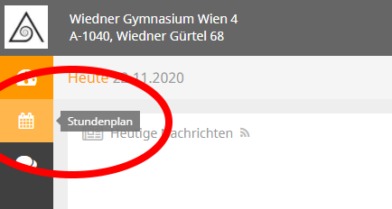
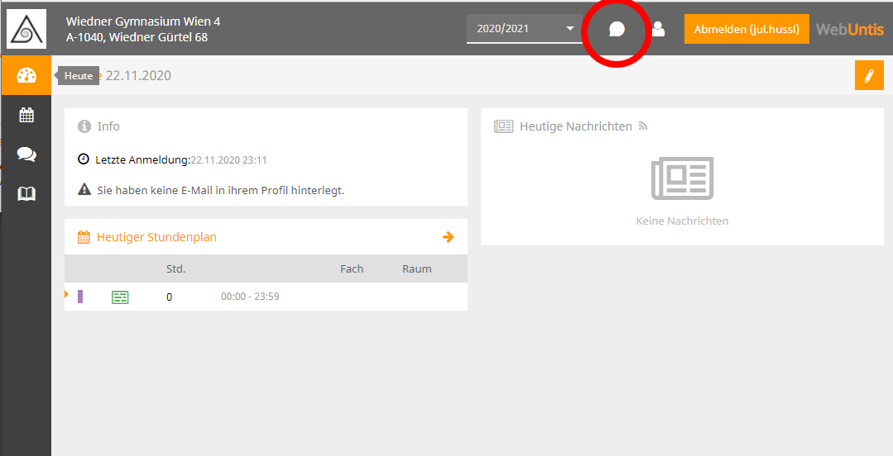

Web Untis
Web Untis ist ein Tool, welches von manchen Schulen verwendet wird um den aktuellen Studenplan mit Suplierstunden, Schularbeiten und Hausübungen zu vermitteln.
Stundenplan einsehen
 Wenn du nur den Stundenplan deiner Klasse anzeigen möchtest, musst du dich nicht anmelden. Dafür musst du auf die Webseite: https://webuntis.com/ gehen und dort auf deinen Schulnamen eingeben. Wenn deine Schule Web Untis unterschtützt sollte sie in der Eingabe erscheinen. Nachdem du die Schule dann ausgewählt hast, solltest du auf einer weißen seite landen. Hier musst du auf der linken Seite auf das Kalender Icon clicken und auf dieser Seite dann deine Klasse auswählen. Nun sollte dein Stundenplan vor dir erscheinen!
Untis Messenger

Der Untis Messenger ist wie eine Art WhatsApp für die Schule. Er wird häufig verwendet, da aus Datenschutzrechtlichen Gründen keine Kommunikation über Whatsapp stattfinden darf.
Wenn ihr in eurer Schule auch den Untis Messenger verwendet wirst du wahrscheinlich Zugangsdaten von deinem Klassenvorstand bekommen haben. Diese kannst du nun, wenn du oben rechts auf der Web untis webseite deiner Schule auf "Login" clickst, eingeben (Um zu der Webseite zu kommen folge den Schritten bei "Stundenplan einsehen"). Wenn der Login geklappt hat, dann solltest du wieder deinen Stundenplan sehen. Jetzt kannst du auf das kleine "Message Icon" oben rechts clicken um zum Untis Messenger zu gelangen.
Jetzt kannst du im Untis Messenger mit deinen Lehrern kommunizieren und Aufgaben einsehen
Tipp:
Wenn du einem Lehrer eine private Nachricht schreiben möchtest, dann kannst du seinen Namen unten links unter "Mitglieder und Gruppen suchen..." eingeben und ihn auswählen
Tipp2:
Um immer schnell zum Messenger zu gelangen kannst du dir ein Lesezeichen in deinem Browser einrichten. Dafür clicke einfach auf den Stern neben der URL der Webseite!